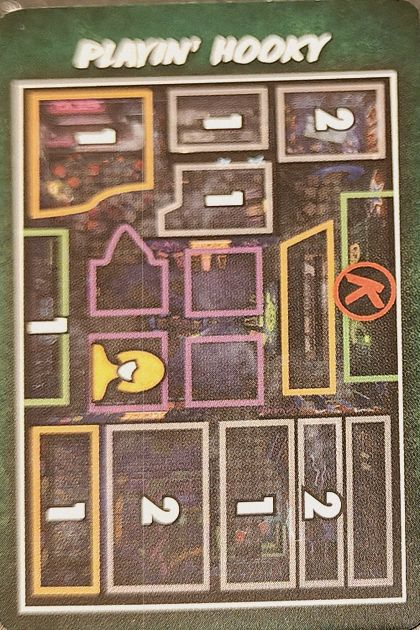
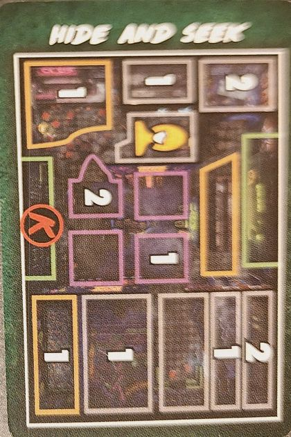
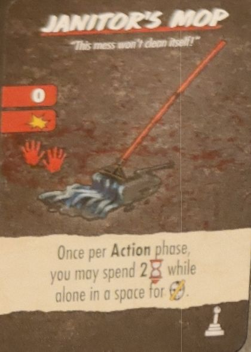
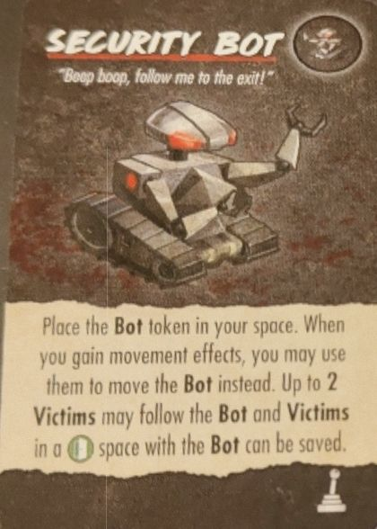
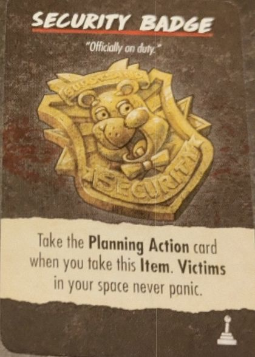
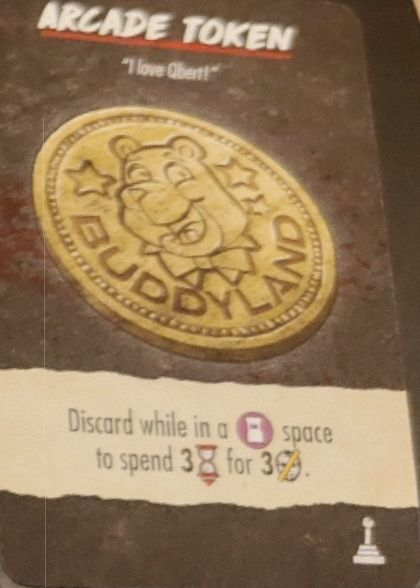

Caja · S4·F1 · 102 partidas
Bad Times at Buddyland56,9% de victorias
🇪🇸 ES · 🇬🇧 EN · 🇫🇷 FR · 🇩🇪 DE · 🇮🇹 IT
📖 Guía de Billy (killer) · Guía de Buddyland (mapa)
Billy en Buddyland. Sobre 102 partidas registradas se gana el 56,9% de las veces, 8,4 puntos por debajo de la media del juego (65,3%).
Qué tiene de particular
Los Buddies son minions con vida, iniciativa y ataque propios. No puedes atacar a Billy mientras haya un Buddy en su casilla. Se cura con el símbolo de corazón mientras quede activa 1 de las 4 fuentes de energía, que puedes desactivar gastando tiempo. El Finale épico saca un segundo killer, Boris: hay que matar a los dos. La apodan «el Camp Happy Trails de la S4»: buen campo de pruebas.
| Nivel | Medio |
| El mapa | 4 casillas de recreativas como punto caliente |
Cómo funciona Billy
- Movimiento base: no se mueve en su Killer Action; ataca a quien esté en su casilla.
- Tiene Minions que pueden aparecer durante la partida y actúan antes que él.
- Antes del Finale, tras los Minions: +1 de vida si hay una power source activa > Target Victim/Final Girl > Strike once.
Resumen de la página de la Final Girl Wiki (CC BY-SA).
El mapa: Buddyland
16 espacios y 2 salidas (norte y sur). Espacios de búsqueda: The Ball Pit, Dining Area y Prize Counter; otros espacios con nombre: Bathroom, Janitor's Closet, Jungle Gym, Kitchen y Party Room. Los 4 espacios centrales forman el Arcade.
- Los espacios del Arcade, en el centro del tablero, aparecen en varios efectos de cartas.
- Los tokens Power Source se colocan por el tablero antes de robar la carta de Setup y aparecen en varios efectos de cartas.
- Hay que apagar los Power Source para impedir que Billy se cure.
Resumen de la página de la Final Girl Wiki (CC BY-SA).
El killer
Billy gana el 58,8% repartido por todos los mapas, sobre 194 partidas. Aquí, en Buddyland, la cifra es 56,9%.
Hojas de preparación
De la más dura a la más fácil. Mínimo 20 partidas.
| Preparación | Victorias | Partidas |
|---|---|---|
| Playin' Hooky | 58,8% | 51 |
| Pizza Party | 62,5% | 48 |
| Hide and Seek | 67,3% | 52 |
| Birthday Bash | 68,6% | 51 |
| Buddy Day | 70,6% | 51 |
Entre Playin' Hooky y Buddy Day hay 12 puntos de diferencia. El montaje inicial pesa más de lo que parece.
Dark Powers
| Dark Powers | Victorias | Partidas |
|---|---|---|
| Merciless Minions | 46,2% | 26 |
| Endless Power | 54,5% | 44 |
| Deathlust | 58,3% | 36 |
| Introducing... Billy Jr! | 60,3% | 58 |
| Unrevealed | 77,3% | 22 |
Cartas de Finale
| Cartas de Finale | Victorias | Partidas |
|---|---|---|
| Power Surge | 39,3% | 28 |
| Encore | 41,0% | 39 |
| Unrevealed | 57,6% | 59 |
| It's Showtime! | 79,3% | 29 |
| Sizzling Power | 80,0% | 30 |
Dónde conseguirla
Enlaces de afiliado: si compras, a mí me llega una comisión y a ti te cuesta lo mismo. No cambian lo que dicen los datos de arriba.
Cómo empezar la partida
Las cuatro aperturas, con cuál usar según lo que veas en el montaje, están en la estrategias de salida.
📖 Guía de Billy (killer)
Vale con cualquier mapa. ↑ arriba
⌛ = Tiempo · ✴ = daño · ❤️ = vida · 🩸 = Bloodlust · 🎭 = sube el Horror · ⊘🎭 = la máscara tachada de la carta
Ojo con esto
- No puedes atacar a Billy si hay un Buddy en su espacio. Los Buddies le protegen a toda costa.
- Mientras haya alguna fuente de energía activa, el icono de la pila con corazón cura 1 ❤️ a Billy. Apagarlas es la clave.
- Un Buddy que aparece en la fase del Killer no actúa hasta la siguiente fase del Killer.
Preparación especial
- Antes de revelar la carta de inicio, pon 4 fichas de Power Source por su cara activa (pila verde con +) en 4 espacios distintos, sin que ninguna quede adyacente a otra. Aparta la 5.ª: puede entrar en juego luego.
- Baraja boca abajo, por separado, las fichas del track de Bloodlust A y B. Pon 6 boca abajo en el tablero del Killer, cada una en su hueco por color e icono. Las 2 que sobran (una de cada) no se usan ni se miran.
- Baraja las 5 cartas de Buddy boca abajo: es el mazo de Buddies. Aparta las 2 de Special Buddy: pueden salir más tarde y siguen las mismas reglas.
- Haz aparecer un Buddy (ver abajo).
Track de Bloodlust
- Cuando el Bloodlust llega a un nivel con ficha, dale la vuelta y aplica su efecto.
Fuentes de energía (Power Source)
- Desactivar: gira la ficha a su cara inactiva (pila roja tachada). Puedes hacerlo gastando ⌛ estando en su espacio, aunque solo estés pasando por él.
- Si una inactiva se Activa, vuelve a su cara verde.
- Con el icono de la pila con corazón, Billy recupera 1 ❤️ si hay al menos una fuente activa. Si no hay ninguna, se ignora.
Los Buddies
- Son Minions y siguen sus reglas normales (pág. 32 del reglamento básico). Cada carta es un animatrónico con su vida, ataque y movimiento.
- Aparecer un Buddy: revela la carta de arriba del mazo, ponle encima los marcadores de vida que indique y pon su ficha en un espacio adyacente a Billy, mejor uno sin Buddy. Si Billy ya no está en juego, no aparece.
- Activación: cada Buddy tiene un número de iniciativa (círculo de arriba a la derecha). Las acciones de Minion y las cartas de Terror se resuelven de menor a mayor iniciativa.
- Matar un Buddy: quita su ficha, coge la Kill Reward de su carta y saca la carta del juego. Si muere fuera de la fase de Acción, coges la recompensa al empezar la siguiente fase de Acción.
- Ejemplo: Toby tiene 3 ❤️, iniciativa 1, ataque 1, movimiento 1 y Kill Reward 2 ⌛.
Finales
- Todos tienen dos filas: arriba Billy va a por ti o a la víctima más cercana, se mueve y ataca; abajo, el icono de la pila con corazón y luego otra vez a por alguien.
- Finale básico (el del oso rosa): ataca sin moverse; abajo, pila con corazón, va y ataca.
- Encore: abajo se mueve 2 veces y ataca 2 veces.
- Sizzling Power: si hay al menos una fuente activa, repite una vez su Killer Action.
- It's Showtime!: no puedes jugar cartas de Reacción si hay más de un Enemy en tu espacio.
- Power Surge (Epic Finale): al revelarlo, aparece Boris. Para ganar tienes que matar a Billy y a Boris.
Poderes oscuros
- Introducing... Billy Jr.!: aparece Billy Jr. en el espacio de Billy.
- Deathlust: +1 al movimiento y al ataque de Billy.
- Endless Power: al revelar la ficha Final Health de Billy, revela una más por cada fuente activa y aplica la que más vida le cure.
- Merciless Minions (Epic Dark Power): en la acción de Minion del Finale, añade un movimiento antes del ataque.
- Backup Generator (Minor): en el Mantenimiento, activa una fuente inactiva que elijas (si puedes). Si activaste alguna, quita un ❤️ de esta carta.
- Renewable Energy (Minor): no puedes desactivar ninguna fuente.
Cartas de Terror de Billy
- Animatronical: aparece un Buddy y robas la siguiente carta de Terror.
- "He's Turning Them Back On!": si no hay fuentes inactivas, descártala y roba otra. Si las hay, pon a Billy en el espacio más cercano con una inactiva, actívala y 🎭.
- "Eyes in the Dark": el Killer va a por ti (la Final Girl) y se mueve 2 veces; luego 🎭 tantas veces como Enemies haya en tu espacio y los adyacentes, como mucho tantas como fuentes activas.
- "It's a Short Circuit!": si no hay víctimas en ningún espacio con fuente activa, descártala y roba otra. Si no, en cada espacio con fuente activa y alguna víctima, muere una víctima, las demás entran en pánico y se desactiva esa fuente.
- "They're Here for Blood!": si no hay Buddies o no hay víctimas, descártala y roba otra. Si no, solo los Buddies: van a por la víctima más cercana, se mueven y atacan. Si murió al menos una víctima, +🩸.
📖 Guía de Buddyland (mapa)
Vale con cualquier killer. ↑ arriba
Ojo con esto
- Buddyland no tiene preparación especial: las fuentes de energía son cosa de Billy.
El mapa
- Los 4 espacios del centro con el icono de la máquina recreativa son espacios Arcade. Varias cartas se refieren a ellos.
- Espacios con nombre: Party Room, Kitchen, Dining Area, Entrance, Prize Counter, Arcade, Janitor's Closet, Bathroom, Jungle Gym y Ball Pit. Dining Area, Prize Counter y Ball Pit tienen mazo de objetos en el lateral.
Cartas de Terror de Buddyland
- Hungry for Blood: si no hay víctimas en Kitchen, Party Room ni Dining Area, descártala y roba otra. Si no, pon al Killer en la de las tres con más víctimas; va a por la víctima o a por ti y ataca 2 veces.
- Panic at the Disco: si no hay víctimas en espacios Arcade, descártala y roba otra. Si no, entran en pánico todas las víctimas de cada Arcade; si alguna huye a un espacio con un Enemy, muere. Si no murió ninguna, +🩸.
- "How'd They Sneak In?": tira 3 dados y pon una víctima por dado: 1-2 Jungle Gym, 3-4 Dining Area, 5-6 Party Room. Luego, un evento.
- "They Want Her!": entran en pánico las víctimas de tu espacio, todos los Enemies se mueven un espacio hacia ti, 🎭 por cada Enemy en tu espacio, y luego un evento.
- "It's Play Time!": tira un dado. 1-3: pon al Killer con el objetivo más cercano. 4-6: va a por la víctima o a por ti y ataca. Repítelo 5 veces más; puedes quitar una repetición por cada carta de Acción que descartes de tu mano, decidiéndolo todo de golpe antes.
Inicios
K = dónde empieza el killer · figura amarilla = la Final Girl · números = víctimas en cada espacio.


Objetos

Arma · alcance 0 · 1 ✴ · 2 manos. Una vez por fase de Acción, si estás solo en un espacio, puedes gastar 2 ⌛ por ⊘🎭.

Pon el token del Bot en tu espacio. Cuando ganes movimiento, puedes usarlo para mover el Bot. Al Bot le siguen hasta 2 víctimas, y las víctimas en una salida con el Bot se pueden salvar.

Al cogerla, coge también la carta de acción Planning. Las víctimas de tu espacio nunca entran en pánico.

Descártala en un espacio de Arcade para gastar 3 ⌛ por 3 ⊘🎭.
Faltan por fotografiar 12 de sus 16 objetos y 3 de sus 5 inicios (Buddy Day, Birthday Bash y Pizza Party).
Eventos de Buddyland
- Birthday Girl
- La Birthday Girl empieza en la Party Room. Si está sola en la fase de Panic, entra en pánico. Si la salvas: 4 ⌛. Si muere: 🩸.
- Nick the Janitor
- Nick empieza en el Janitor's Closet y te puede seguir incluso al espacio del Killer. Cuando entra en un espacio con un Enemy, le hace 2 ✴; luego sale del tablero y vuelve al Closet en el siguiente Upkeep. Si muere: 2 🩸.
- Sing-A-Long
- En cada Upkeep: 🎭. Se descarta cuando el nivel de Horror llega a la zona roja.
- Pizza Delivery
- La víctima más cercana a la Entrance es el Pizza Guy. Mientras esté en tu espacio, puedes tirar 2 dados más al resolver una carta de acción Search. Si muere, todas las víctimas de su espacio y de los adyacentes entran en pánico.
Faltan 6 de sus 10 eventos: Broken Machine, Buddy Up, Hidden Prizes, Party Time, Playtime Shenanigans y Tragic Collapse.
Texto nuestro a partir del reglamento, las cartas y la wiki. Si ves un error, dínoslo.